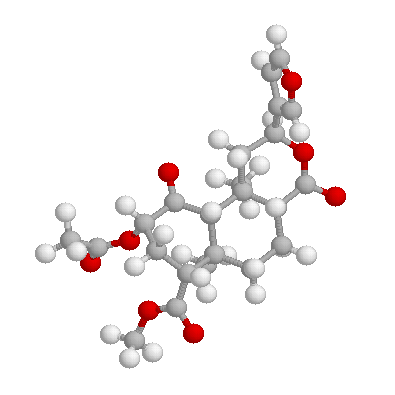

Salvinorin A
To view a molecular model of salvinorin A that can be rotated and manipulated in various ways, you will first need the
Chime® plug-in
for your web browser. Once you have the plug-in installed, go
here
to access the model.